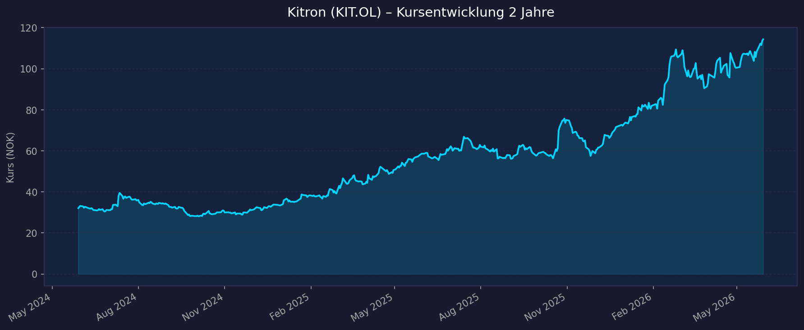
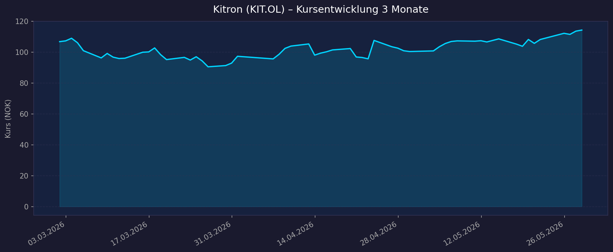

📈 1. Kursentwicklung
Aktueller Kurs: 114,30 NOK (~€9,94) | Veränderung heute: +0,6% All-Time-High: 115,80 NOK / €10,45 (26.05.2026)
Chart – 2 Jahre

Chart – 3 Monate

📊 TradingView – Kitron ASA (OSL:KIT)
| Zeitraum | Kurs Start | Kurs Ende | Veränderung |
|---|---|---|---|
| 2 Jahre | 32,07 NOK (Mai 2024) | 114,30 NOK | +256 % |
| 3 Monate | 106,81 NOK | 114,30 NOK | +7,0 % |
| 52-Wochen-Hoch | — | 115,80 NOK | — |
| 52-Wochen-Tief | — | 54,20 NOK | — |
Hinweis: Kitron ist an der Oslo Børs in NOK notiert, berichtet jedoch in EUR. Market Cap: ~25 Mrd. NOK / ~€2,17 Mrd.
💹 2. KGV-Entwicklung (Kurs-Gewinn-Verhältnis)
Trailing P/E (TTM): ~39x
Forward P/E (2026E, Konsens EPS €0,35): ~28x
Branchendurchschnitt (Europäische Elektronikindustrie): ~18x
| Zeitraum | KGV | Einordnung |
|---|---|---|
| Aktuell (Trailing TTM) | ~39x | Deutlich über Branche (~18x) |
| Forward 2026E | ~28x | Premium-Bewertung, wachstumsbedingt |
| FY 2025 (EPS €0,22) | ~45x | Basiert auf historischem EPS |
| FY 2024 (EPS €0,14) | N/V | Daten nicht verfügbar |
| FY 2023 | N/V | Daten nicht verfügbar |
Bewertung: Kitron wird mit einem signifikanten Aufschlag auf den Branchendurchschnitt gehandelt. Der Markt preist starkes Wachstum in Defence & Aerospace ein. Der Forward P/E von ~28x ist bei einer EPS-Steigerung von +59 % (2025→2026E) durch das Wachstum teilweise gerechtfertigt, setzt aber eine Fortsetzung des Momentums voraus.
💰 3. Sales Multiple (Kurs-Umsatz-Verhältnis / P/S)
Aktuelles P/S-Verhältnis (TTM 2025): ~2,94x
(Berechnung: Market Cap ~€2,17 Mrd. / Revenue FY2025 €738,4 Mio.)
| Zeitraum | P/S Ratio | Einordnung |
|---|---|---|
| Aktuell TTM (2025) | ~2,94x | Moderat für EMS-Sektor |
| Forward (2026E, Umsatz ~€975M) | ~2,23x | Günstig bei Wachstumserfüllung |
| Vor 12 Monaten (2024) | ~3,35x | Höher bei niedrigerem Umsatz |
| Vor 24 Monaten | N/V | Daten nicht verfügbar |
Trend: Sinkend — das Umsatzwachstum (+66 % YoY Q1 2026) übertrifft den Kursanstieg. Das P/S-Multiple ist trotz Kursanstieg moderater geworden, was für gute Fundamentals spricht.
📊 4. Handelsvolumen (Trading Volume)
| Zeitraum | Ø Tagesvolumen | Auffälligkeiten |
|---|---|---|
| 3-Monats-Durchschnitt | ~710.000 Aktien | Leicht erhöht ggü. 2J-Schnitt |
| 2-Jahres-Durchschnitt | ~645.000 Aktien | Stabile Basisliquidität |
| Volumen-Peak (2J) | 4.600.469 Aktien | 11.07.2024 – Naval Strike Missile Auftrag NOK 500M von Kongsberg bekannt gegeben |
Volumentrend: Das Handelsvolumen hat im 3-Monats-Schnitt leicht zugenommen (+10 % ggü. 2J-Schnitt). Das aussergewöhnliche Volumen-Ereignis vom Juli 2024 (7× Durchschnitt) zeigt wie sensibel der Kurs auf Defence-Auftragsmeldungen reagiert. Das Interesse an der Aktie ist mit dem Kursanstieg von +256 % über 2 Jahre deutlich gestiegen.
🏦 5. Insider Trades (letzte 2 Jahre)
| Datum | Name | Funktion | Kauf/Verkauf | Anzahl Aktien | Wert |
|---|---|---|---|---|---|
| 23.02.2026 | Zygimantas Dirse | VP Asia | Verkauf | 100.000 | NOK 10.577.000 (~€919.000) |
| Nov. 2025 | Management | Mehrere | Beteiligung (Private Placement) | N/V | N/V |
3-Monats-Überblick: Netto-Verkäufe. Der Verkauf von Zygimantas Dirse erfolgte ausdrücklich im Rahmen einer vorab angekündigten Lock-up-Ausnahme aus dem November-2025-Private-Placement und ist daher nicht als negatives Signal zu werten.
2-Jahres-Überblick: Sehr geringe Insider-Aktivität. Keine organischen Verkäufe außerhalb von Lock-up-Befreiungen bekannt. Das Nov.-2025-Private-Placement deutet auf Managementvertrauen in die langfristige Entwicklung hin.
Quellen: GlobeNewsWire / Oslo Børs Pflichtmitteilungen
🩳 6. Short-Positionen
Aktuelle Short Quote: Keine verlässlichen Daten verfügbar
| Zeitraum | Short Interest | Veränderung |
|---|---|---|
| Aktuell | Nicht verfügbar | — |
| Vor 3 Monaten | Nicht verfügbar | — |
| Vor 12 Monaten | Nicht verfügbar | — |
Einschätzung: Short-Interest-Daten sind für Aktien an der Oslo Børs öffentlich schwer zugänglich. Weder yfinance noch gängige Short-Tracking-Plattformen (Finviz, OpenInsider) bieten systematische historische Daten für norwegische Titel. Im Kontext eines All-Time-Highs und starker Analyst-Kaufempfehlungen ist erheblicher Short-Druck unwahrscheinlich.
🗞️ 7. Aktuelle Nachrichten
| Datum | Quelle | Nachricht | Relevanz |
|---|---|---|---|
| 26.05.2026 | Marktdaten | Aktie erreicht neues All-Time-High von €10,45 / ~115,80 NOK | Hoch |
| 24.04.2026 | GlobeNewsWire | Rekord-Q1: Umsatz €272,7M (+66% YoY), Backlog €805,9M (All-Time-High), EBIT 9,4% | Hoch |
| 21.04.2026 | GlobeNewsWire | EUR 37M Auftrag für taktische Kommunikationsgeräte (Nächste-Generation-Radiosysteme) | Hoch |
| 10.04.2026 | Yahoo Finance | EUR 42M Auftrag aus Defence/Aerospace-Sektor (layered defence architecture) | Hoch |
| 2026 (Mrz.) | Yahoo Finance | Autonome Systeme Auftrag auf EUR 12M erhöht | Mittel |
| 23.02.2026 | GlobeNewsWire | Insider-Meldung: Lock-up-Verkauf Dirse (100k Aktien, Lock-up-Exemption) | Mittel |
| 12.02.2026 | GlobeNewsWire | Rekord FY2025/Q4 2025, 2026-Guidance erhöht (EUR 900-1050M Umsatz, EUR 84-108M EBIT) | Hoch |
| 2026 | Simply Wall St | Analysten erhöhen Kursziele um 23% auf Ø €9,00 — bereits übertroffen | Mittel |
| 12.03.2025 | MarketScreener | Kongsberg-Auftrag NOK 109M für Raketenelektronik | Mittel |
| 01.07.2024 | The Defense Post | Naval Strike Missile (NSM) Auftrag NOK 500M von Kongsberg — Aktie +Volumen-Peak | Hoch |
Sentiment: Überwiegend sehr positiv — Kitron befindet sich im Zentrum des europäischen Verteidigungsbooms. Jede Auftragsmeldung aus dem Defence-Sektor treibt den Kurs spürbar. Keine negativen Meldungen in den letzten 12 Monaten.
📋 8. Letzte 3 Quartalsberichte
Q1 2026 (gemeldet 24. April 2026)
| Kennzahl | Ist | Erwartung | Abweichung |
|---|---|---|---|
| Umsatz (Revenue) | €272,7 Mio. | ~€240 Mio. (Schätzung) | +~14% |
| EPS (bereinigt) | €0,09 | €0,04 (Vorjahr) | +125% YoY |
| Nettomarge | 7,3% | — | — |
| EBIT-Marge | 9,4% | ~9% | Inline |
| Free Cashflow | Nicht verfügbar | — | — |
| Order Backlog | €805,9 Mio. (ATH) | — | +54% YoY |
Guidance: Management bestätigt 2026-Ziel EUR 900-1050M Umsatz / EUR 84-108M EBIT, Tendenz obere Hälfte der Spanne
Kursreaktion: +5,61% am Earnings-Tag
Highlight: Defence & Aerospace = 50% des Gruppenerlöses, +213% YoY
Q4 2025 (gemeldet 12. Februar 2026)
| Kennzahl | Ist | Erwartung | Abweichung |
|---|---|---|---|
| Umsatz (Revenue) | €233,8 Mio. | N/V | +45,6% YoY |
| EPS (bereinigt) | €0,08 | N/V | +100% YoY (Q4 2024: ~€0,04) |
| Nettomarge | ~7,4% | — | — |
| EBIT-Marge | 9,6% | — | — |
| Free Cashflow | Nicht verfügbar | — | — |
Guidance (2026 neu): EUR 900-1050M Umsatz / EUR 84-108M EBIT (erstmalig kommuniziert)
Kursreaktion: +2,77%
Highlight: Defence & Aerospace Q4-Umsatz €94,5M (+147% YoY) | FY 2025 Gesamt-EBIT +35,2% auf €64,5M
Q3 2025 (gemeldet Oktober 2025)
| Kennzahl | Ist | Erwartung | Abweichung |
|---|---|---|---|
| Umsatz (Revenue) | ~€168 Mio. | N/V | +15% YoY |
| EPS (bereinigt) | N/V (9M 2025 kumuliert: €0,13) | N/V | N/V |
| Nettomarge | Nicht verfügbar | — | — |
| EBIT / EBIT-Marge | €14,6 Mio. / ~8,7% | — | +36% YoY |
| Free Cashflow | Nicht verfügbar | — | — |
Guidance: 2025-Ausblick nach oben revidiert (Details N/V)
Kursreaktion: Nicht verfügbar
Highlight: Solides organisches Wachstum, Defence bereits als Haupttreiber sichtbar
📝 Gesamteinschätzung
Stärken:
- 🚀 Außergewöhnliches Wachstum: +66% Umsatz Q1 2026 YoY; +256% Kurs in 2 Jahren
- 📦 Rekord-Auftragsbestand €805,9M (All-Time-High, +54% YoY) — hohe Umsatzsichtbarkeit
- 🛡️ Profiteur des europäischen Verteidigungsbooms (Defence = 50% der Umsätze)
- 📈 Steigende Margen: EBIT-Marge von 7,4% (2024) auf 9,6% (Q4 2025)
- 🌍 Diversifizierte europäische Produktion (Norwegen, Schweden, Deutschland, Litauen, Polen)
- 💻 Neuer Data-Center-Kunde bringt €50-100M Zusatzumsatz (Diversifizierung)
Risiken:
- ⚠️ Hohe Sektorkonzentration: 50% Defence – geopolitische Wendung = Auftragsrisiko
- 💰 Bewertungspremium: Forward P/E ~28x vs. Branchen-Ø ~18x — wenig Spielraum für Enttäuschungen
- 📉 Analysten-Kursziel €9,00 bereits übertroffen (Kurs €10,45) — upside-Potenzial limitiert
- 🔓 Weitere Lock-up-Verkäufe aus Nov.-2025-Private-Placement möglich (Angebotsüberhang)
- 🔄 Lieferketten-/Rohstoffrisiken im EMS-Sektor (Electronic Manufacturing Services)
- 🏗️ Skalierungsherausforderungen bei rapider Kapazitätserweiterung
Fazit: Kitron hat sich durch den europäischen Verteidigungsaufschwung zu einem der stärksten Wachstumswerte an der Oslo Børs entwickelt. Der Rekord-Auftragsbestand, die verbesserten Margen und die Management-Konfidenz (Guidance-Trend in obere Hälfte) sprechen für anhaltende fundamentale Stärke. Allerdings preist der aktuelle Kurs bereits sehr viel Wachstum ein — die Aktie notiert nahe All-Time-High und über dem Analysten-Konsenskursziel. Das Chance-Risiko-Verhältnis ist bei diesen Niveaus ausgewogener als noch vor 12 Monaten.
Datenquellen: Yahoo Finance · yfinance (Python) · Macrotrends · GlobeNewsWire · Investing.com · Simply Wall St · The Defense Post · MarketScreener · Alpha Spread · stockinvest.us
Keine Anlageberatung — rein informative Auswertung öffentlicher Daten